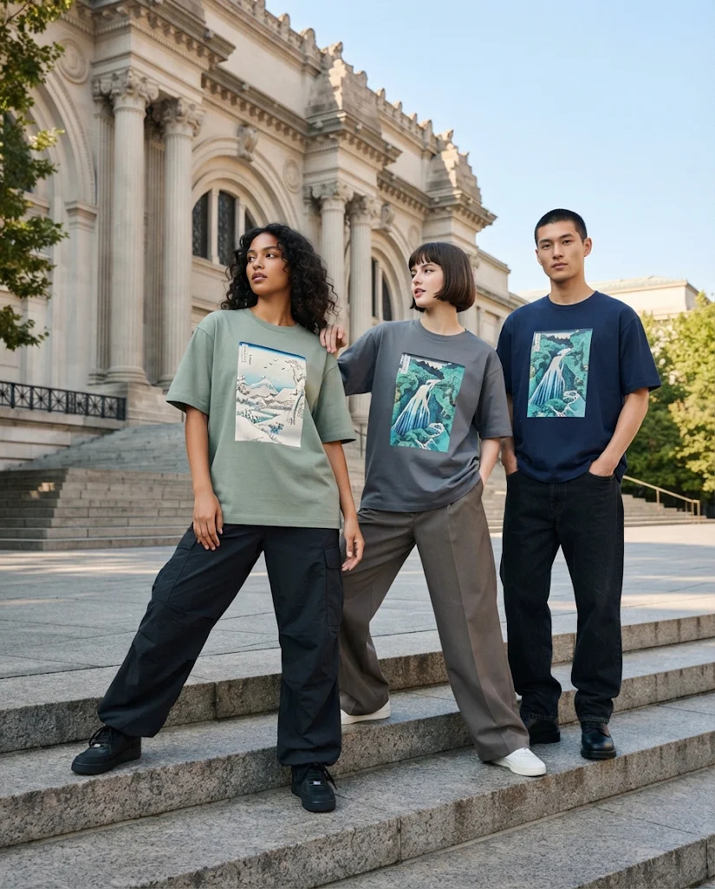
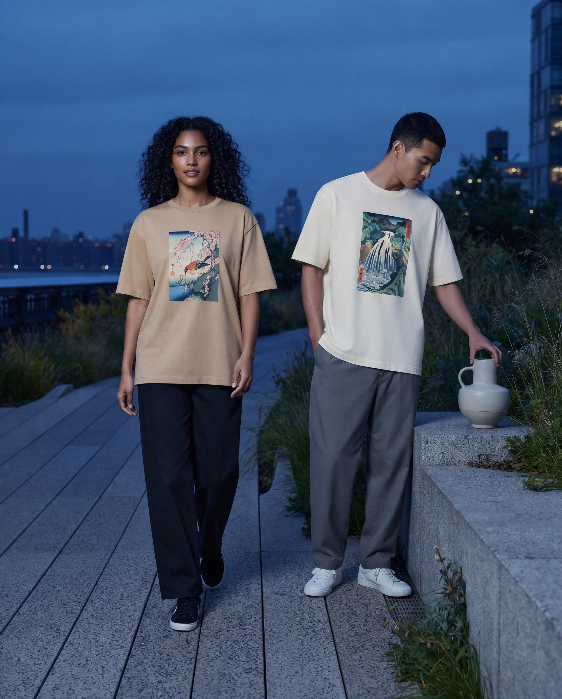
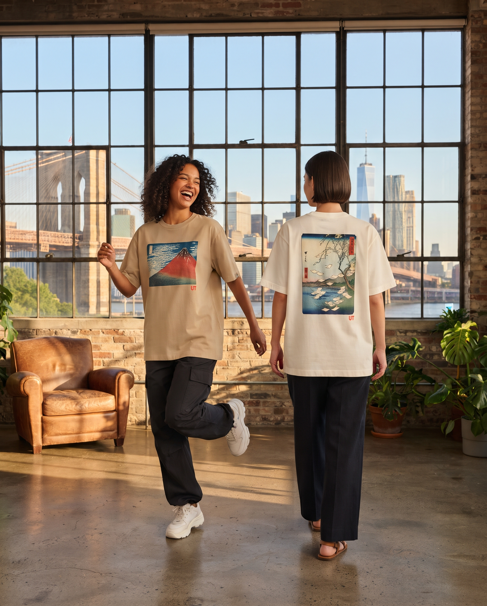
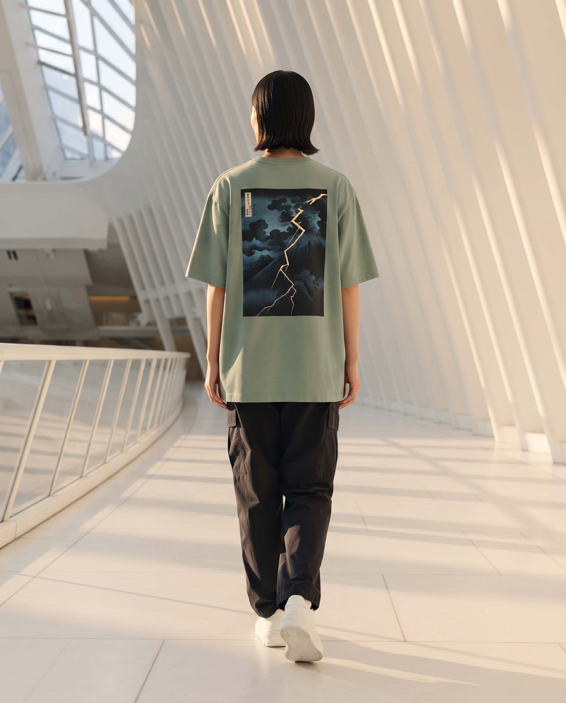
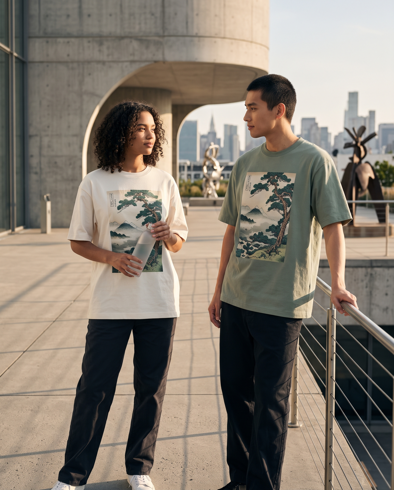

A complete omnichannel digital advertising campaign for the Uniqlo UT x Katsushika Hokusai collaboration. Fusing timeless Edo-period woodblock nature masterpieces with minimalist urban streetwear aesthetics across social feeds, smartphone app mockups, and animated banner media.
Explore each raw high-resolution commercial asset paired directly with its finalized digital placement mockup across platforms.
Featuring Snowy Morning at Koishikawa and Kirifuri Waterfall at Kurokami Mountain by Katsushika Hokusai. Shot on Hasselblad X2D 100C against the monumental granite steps and neoclassical colonnade of Fifth Avenue.

Featuring Bullfinch and Weeping Cherry and Kirifuri Waterfall at Kurokami Mountain under cool moody coastal twilight tones with deep indigo ambient lighting.

Featuring Fine Wind, Clear Morning / Red Fuji and Ejiri in Suruga Province / A Sudden Gust of Wind. Showcasing spontaneous Nordic street-culture motion and rear-view graphic back placements against the Brooklyn Bridge view.

Featuring Thunderstorm Beneath the Summit / Black Fuji in a striking rear-view backshot walking away from the camera, highlighting crisp fabric weave textures under golden hour directional light.

Featuring Cushion Pine at Aoyama set against brutalist concrete curves in the Meatpacking District. Editorial styling with effortless minimalist props and warm afternoon sun.
